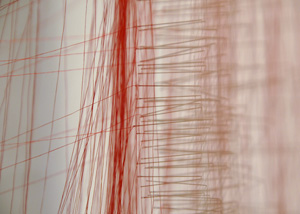

By A Thread Ted Fullwood: Energy Machines Beili Liu, detail, Bound #1, 2009, thread, sewing needles, Courtesy of the Artist |
 |
The San Jose Institute of Contemporary Art (ICA) is pleased to present, By A Thread, an exhibition of artwork by emerging and mid-career Bay Area artists who create unexpectedly nostalgic, and poetic works using thread as their primary medium.
By A Thread will be exhibited in the ICA’s Main Gallery from February 6 through May 15, 2010. The show includes work from artists Jody Alexander, Susan Taber Avila, Diem Chau, Lauren DiCioccio, Robin Hill, Nina Katchadourian, Lisa Kokin, Beili Liu, Katie Lewis, Emil Lukas, Victoria May, Ali Naschke-Messing, Lisa Solomon, Hadi Tabatabai, Nicola Vruwink, and Allison Watkins. An opening reception will be held at the ICA on Friday, February 5, from 6pm to 8pm. A panel discussion with the artists will take place at the ICA on Thursday, February 11, from 7pm to 9pm.
“By a Thread is not an exhibition about precise or technically proficient sewing, embroidery or any other form of needlework,” says Cathy Kimball, ICA Executive Director. “Rather, it is an exhibition featuring contemporary art that uses thread as a medium to communicate the ideas, visions, and conceptual explorations of the participating artists. In many cases, the artists included in the exhibition have found that the ubiquitous and centuries-old process of stitching can be used in innovative ways to create something new,” explains Kimball. Thus, the exhibition will feature the work of artists who give fresh consideration to the value and function of traditional handiwork. The show will include small two-dimensional pieces and large-scale installations, as well as a wide variety of sculptural works.
Also opening on February 6th in the ICA’s Cardinale Project Room and running through April 3, 2010 – Ted Fullwood: Energy Machines – a solo exhibition of fiber works created by San Jose-based artist Ted Fullwood who works in a variety of media including clay and mosaic. Fullwood’s abstract woven sculptural forms made from chenille stems – also known as pipe cleaners, exhibit rich color palettes, subtle variations, and complex textures.
From February 6 through May 15, Night Moves, after-dark programming in the ICA’s front windows presents Cat Mazza’s The Mill Series. Mazza’s work combines craft with digital media to explore the overlaps between textiles, technology and labor. Created with software that translates video pixels into stitch work, The Mill Series animates footage of factories that once flourished during the American industrial revolution.
# # #
San
Jose Institute of Contemporary Art 560 South First Street San Jose, CA 95113 tel (408) 283-8155 fax (408) 283-8157 |